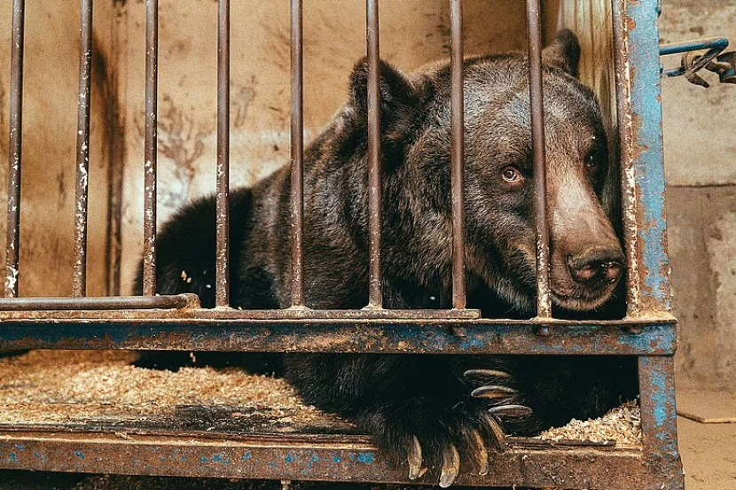
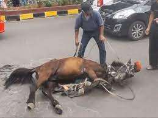

Kami menyediakan layanan untuk hewan-hewan yang mengalami kekerasan dan hewan-hewan terlantar.
Kami juga memberikan pendidikan untuk masyarakat umum agar masyarakat tau serta mengerti macam-macam
kekerasan terhadap hewan.
Website ini juga merupakan tempat perantara bagi hewan-hewan yang mengalami kekerasan.
Adapun beberapa kisah mereka dapat kita saksikan diwebsite ini.
Animals in The Disaster Animals in The Farming
Pada tahun 1994, seekor gajah bernama Tyke mengamuk. Setelah jenuh berurusan dengan pukulan dan rantai, sang gajah mengamuk. Dan ketika mengamuk, pelatihpun tidak bisa melindungi dirinya. Apalagi masyarakat luas. Pada saat itu, sang gajah betina sedang berkeliling bersama dengan Circus International. Pada 20 Agustus 1994, selagi pertunjukan berlangsung, Tyke memasuki arena dan menendangi seseorang. Pada awalnya, hal itu dikira sebagai bagian pertunjukan. Setelah melihat orang itu—sang pelatih—cedera berat, orang-orangpun menyadari bahwa ini bukan bercanda. Selama hampir 30 menit, Tyke berlarian di jalanan di kawasan bisnis Kakaako di saat jam sibuk. Tyke akhirnya ditembak 87 kali oleh polisi sebelum ia lunglai karena kerusakan syaraf dan pendarahan otak. Mati mengenaskan.
Monyet-monyet mungil tersebut merintih, menjerit, dan menangis seperti bayi yang baru lahir ketika mereka digantung di sabuk logam yang diikatkan di lehernya. Satwa-satwa itu menjadi bahan percobaan untuk tes toksikologi. Juga diperlihatkan bahwa ketika satwa-satwa itu tidak diikat dan diujicoba, mereka dikurung di dalam sangkar kecil yang mengakibatkan mereka menjadi gila. ujicoba juga dilakukan dengan sengaja memasukkan racun ke tubuh satwa untuk melihat berapa banyak bahan kimia atau obat yang diperlukan yang bisa mengakibatkan bahaya yang serius, dalam upaya untuk mengukur berapa dosis “aman” bagi manusia. Dampaknya tentu saja mengerikan, mulai dari muntah, pendarahan internal, gangguan pernapasan, demam, penurunan berat badan, lesu, masalah kulit, kegagalan organ, dan bahkan kematian. CFI menduga hewan tidak diberikan pereda nyeri atau anestesi.
Dalam video berdurasi 1 menit itu terlihat seekor kuda penarik delman terkapar di tengah jalan. Kuda tersebut diduga kelelahan saat tengah mengangkut penumpang. Sang kusir kemudian berupaya membangunkannya dibantu warga. Namun, kuda malang itu bergeming dan kesusahan untuk berdiri. Dalam kondisi masih tergeletak, kuda tersebut terus dipaksa agar berdiri. Bahkan, badannya sempat dicambuk. Akibat insiden tersebut, arus kendaraan sempat mengalami kemacetan. Sementara upaya evakuasi kuda, sebut Ahow, memakan waktu sekitar 30 menit.
Seekor beruang betina yang dipaksa tampil di sirkus selama lebih dari satu dekade. Beruang ini telah dikurung di kandang kecil hampir sepanjang hidupnya. Beruang bernama "Jambolina." Pemiliknya mengurung beruang itu pada kandang kecil yang diletakkan di garasi rumah di Kremenchuk, Ukraina. Dia dikurung sendirian di dalam kandang kecil sejak dia masih bayi. Dia tidak pernah bersama beruang lain. Jambolina sudah dibawa sejauh hampir 1.500 mil ke rumah barunya di tempat perlindungan beruang di Swiss. Tetapi pada usia beberapa minggu, dia dijual kepada pemiliknya yang kemudian melatihnya sebagai beruang sirkus. Karena pandemi, pertunjukan sirkus telah dibatalkan sejak Maret. Akibatnya, beruang itu tetap dikurung selama beberapa bulan. Kandangnya sangat kecil sehingga Jambolina bahkan tidak bisa "berdiri tegak atau bergerak". Kondisi Jambolina jauh dari pemeliharaan yang sesuai. Itu berdampak negatif pada kesehatannya. Giginya dalam kondisi buruk dan cakarnya perlu pemeriksaan lebih lanjut.

Animals in The Wild Animals in The Farming
Dalam suatu acara tradisional, warga di sebuah desa di China mengadu dua kerbau untuk saling tanduk. Kedua kerbau berhadapan dari jarak agak jauh lalu berlari beradu kepala. Dua kerbau berbadan tambun dan bertanduk panjang itu saling lari dan bertumbuk. Keduanya terjungkal, langsung terpuruk dan tak bergerak-gerak lagi. Darah mengucur dari mulut kerbau. Para penonton yang memadati lokasi langsung berlari melihat kedua kerbau yang sepertinya sudah tak bernyawa. Mereka berusaha membangunkannya.
Anjing ini dulunya sering disiksa. Hingga kini, ia tidak bisa tidur dengan nyenyak dan selalu menangis dalam tidurnya akibat trauma. Sebuah video yang memperlihatkan seekor anjing cokelat dewasa yang susah tidur nyenyak. Hal itu terjadi semenjak dirinya disiksa oleh orang tak dikenal sampai terluka Pasca kejadian pahit itu, beberapa guratan luka terlihat membekas di tubuh si anjing. Di antaranya, sebuah bekas luka besar melintang di punggung bagian kanan si anjing cokelat. Kini ia menjadi anjing yang hidup penuh ketakutan, badannya pun gemetaran. Sementara, menangis dalam tidur adalah cara si anjing malang dalam melampiaskan semua beban dan trauma masa lalunya. Mengetahui hal tersebut, tim penyelamat anjing pun mendatangi lokasi si anjing cokelat yang malang. Setelah mengobservasi, anjing tersebut diangkut secara hati-hati dan dibawa ke tempat yang aman. Berharap, mimpi buruknya akan segera berakhir.
Lumba-lumba memang dikenal manusia karena kepintarannya dalam menangkap perintah manusia, sehingga banyak tempat wisata yang menggunakan makhluk ini sebagai hiburan tontonan di tempat parawisata. Lumba-lumba diambil dari habitatnya menggunakan boks yang berukuran pas dengan tubuh lumba-lumba tersebut dengan air secukupnya. Lumba-lumba diperintah untuk melakukan atraksi-atraksi tersebut dengan imbalan ikan kecil untuk makanannya. Sedangkan sebelum pertunjukkan dimulai, lumba-lumba belum makan. Yang tentu saja akan membuat mereka lebih tergiur dan patuh dengan perintah manusia.
Dikutip dari laman American Anti-Vivisection Society, kelinci juga digunakan dalam penelitian racun pada kosmestika dan produk sehari-hari. Hal ini menyebabkan kerusakan mata dan iritasi kulit pada kelinci yang menyakitkan. Karena itu, sejumlah produk kosmetik yang mendukung animal anti-cruelty menghentikan praktik ini dan memasang label anti kekejaman pada hewan di produknya. Terlepas dari proses percobaan yang dilakukan, lingkungan laboratorium juga menyebabkan stres pada kelinci. Tekanan ini juga menyebabkan penurunan imun dan peningkatan risiko penyakit pada hewan.

Animals in The Wild Animals in The Farming
Sejumlah orang tak dikenal menerobos sebuah kebun binatang di Perancis, menembak mati seekor ekor badak putih, dan memotong kedua cula hewan itu. Para tersangka membobol gerbang utama dan menerobos setidaknya dua penghalang, tanpa diketahui lima orang yang ada di dalam tempat itu. Badak bernama Vince yang berusia empat tahun itu diserang di daerah lokasi setidaknya dua ekor badak lain ditempatkan. Para staf meninggalkan kandang badak pada Senin. Ketika mereka kembali keesokan harinya, mereka menemukan badak itu sudah mati dan kedua culanya hilang. Badak itu ditembak tiga kali di kepalanya sebelum para penjahat memotong cula hewan itu dengan menggunakan gergaji mesin. Dua badak lain yang tinggal di kandang yang sama dengan Vince tak terluka. Mereka adalah Gracie, badak betinaberusia 37 tahun dan Bruno, pejantan berusia lima tahun. Dalam delapan tahun terakhir, sekitar seperempat populasi badak dunia dibunuh di Afrika Selatan, yang menjadi rumah 80 persen populasi badak yang tersisa.
Selama hampir 4 bulan, Koala yang hidupnya ada di hutan-hutan dan di pohon-pohon di tempat Satwa di Australia Tenggara itu terkena imbas kebakaran hutan. Mereka mencoba lari dari hutan, tetapi banyak yang terjebak dan terbakar oleh api dan mati. Jumlah Koala yang mati 2000 total semua 480 juta binatang mamalia, reptil, burung yang terkena dampak kebakaran hutan.Sudah banyak usaha yang dilakukan oleh Pemerintah dan penjinak api dengan menyemperotkan dengan alat-alat yang canggih untuk memadamkan api. Tapi ternyata begitu satu padam, apa yang lain terus menyala. Tidak pernah berhenti. Nyala api yang merah itu membuat langit dan awan di sekeliling dari kebakaran itu menjadi merah menyala.
Seekor kanguru yang membawa bayinya yang berusia dua bulan di kantungnya ditemukan dengan panah di dadanya berhasil diselamatkan oleh para dokter hewan di Melbourne. Kanguru yang diberi nama River itu ditemukan oleh petugas satwa di University Hill di Bundoora, sekitar 18 km dari pusat kota Melbourne. Induk kanguru dan bayinya selamat namun para dokter khawatir mereka bisa bertahan hidup. Kanguru ini kemudian dibawa ke rumah sakit hewan Lort Smith dalam kondisi kritis. Seekor kanguru juga ditembak dengan panah di Ashburton di Victoria Tengah, seekor kangguru lainya mati setelah juga terkena panah di Warrandyte, sekitar 20 km dari pusat kota Melbourne.
Orangutan yang terbakar di Desa Wajok Hilir, Kecamatan Siantan, Kabupaten Pontianak, Provinsi Kalimantan Barat, akhirnya mati. Untuk luka-luka bakar sebenarnya sudah menunjukkan kesembuhan. "Orangutan itu mati sekitar pukul 22.30 WIB. Masyarakat berinisiatif untuk mengasapi dengan menggunakan api, tapi malah pohon kelapa ikut terbakar dan turut membakar orangutan tersebut. "Kemarin sore kondisinya semakin membaik. Tapi untuk memastikan penyebab kematian orangutan akan dilakukan otopsi," tambah Hermayani Putra. Populasi orangutan saat ini semakin berkurang karena rusaknya habitat asli mereka disebabkan pembukaan lahan perkebunan maupun illegal logging. Diperkirakan saat ini populasi orangutan di Kalimantan hanya tersisa 50.000 ekor saja
Let's Protect Them !.
Mengapa hewan harus dilindungi ? Jawabannya sudah sangat familiar yaitu menjaga keseimbangan ekosistem, tapi apakah hanya itu alasannya? Tentu tidak, hewan - hewan perlu dilindungi karena mereka juga makhluk hidup dan mempunyai hak untuk tinggal di bumi. Tentunya kita tidak asing lagi dengan kata 'Teman'. Terkadang hewan memiliki perasaan yang bahkan lebih baik daripada manusia. Tidak sedikit orang-orang membuat hewan - hewan menjadi temannya, dikarenakan kesetiaanya. Contohnya adalah seekor anjing yang bernama Hatchi dia anjing yang pintar dan selalu bersedia menunggu tuannya untuk pulang kerja sampai bahkan tuannya meninggal. Hewan - hewan merupakan teman kita tinggal dibumi ini juga, jadi marilah memulai melindungi mereka dengan cara merawat dan memeliharanya dengan sepenuh hati.